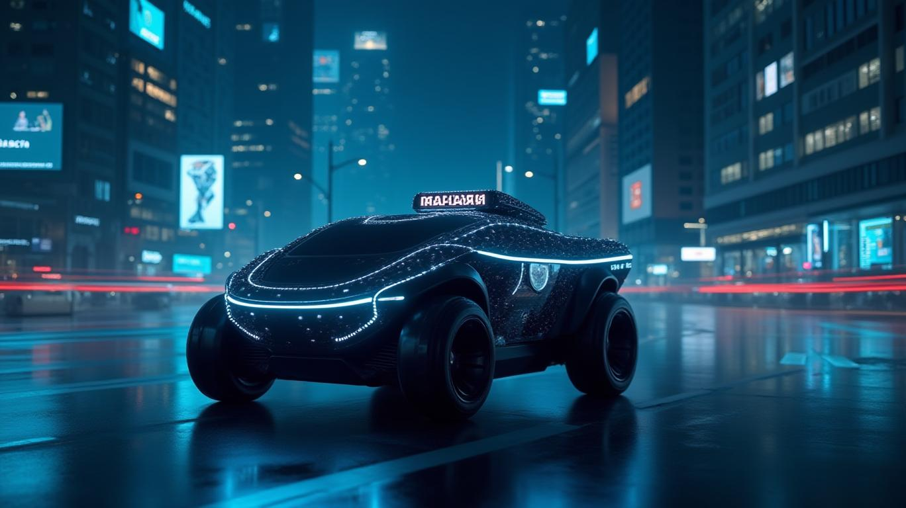

中国のLiDARパイオニアであるHesai Group（Hesai Technology）は、Infinity Eye LiDARソリューションを発表した。Level 2（ADAS）からLevel 4（完全自動運転）までの自動運転を支援する、マルチ構成対応のシステムである。最先端の技術と量産対応能力を組み合わせたこのプラットフォームにより、Hesaiは急速に拡大する自動運転市場での地位をさらに強固なものにしようとしている。一方で、財務不正や軍との関係に関する最近の疑惑が、投資家にとって重要な疑問を投げかけている。
Hesaiのlnfinity Eyeは、用途に応じた3つの構成を提供する。
4台のAT1440超高精細LiDAR（1,440チャンネル、10%反射率で300m射程）と4台のFTX死角補完LiDAR（180°×140°視野）を搭載する。毎秒3,400万ポイントを処理し、主流LiDARの45倍の点群密度を実現することで、都市環境における障害物の精密検出を可能にする。ロボタクシーや自動運転トラックを対象とし、2025年末に量産開始が予定されている。
ETX超長距離LiDAR（400m射程、0.05°解像度）とFTXユニットを組み合わせる。高速道路での自律走行に最適化されており、2026年末から量産が始まる。
コンパクトなATX LiDAR（200m射程、256チャンネル）を使用し、廉価な量産車向けに設計されている。2025年Q1から既に生産中で、5万台以上を出荷済み。BYDや長安汽車を含む11のOEMが採用している。
Hesaiの2025年Q1の世界市場シェアは28%に急上昇した。2024年の15%から大幅な増加であり、コスト効率の良いソリッドステートLiDARと戦略的パートナーシップによるものだ。AP/QTシリーズは中国における新規ADASコントラクトの60%以上を獲得した。競合他社と比べると、Luminar（LMNR）は高価格と採用遅延により18%に低下し、Velodyne（VLDR）はレガシーな回転式LiDAR設計のため12%に下落、Innoviz（INVZ）はサプライチェーン問題により10%に落ち込んでいる。
Hesaiの第4世代IPEプラットフォームは毎秒246億サンプルを処理し、あらゆる気象条件下での比類なき信頼性を実現する。製品間で85%のコンポーネント共通化を実現した垂直統合により、年間200万台の生産能力を支え、競合他社の能力を大幅に上回る。
Hesaiは2025年の売上高を4億1,100万〜4億8,000万ドルと予測しており、2024年比で44〜69%の増加となる。粗利益率は45%を維持しており、非GAAP純利益は3,500万〜5,000万ドルと25〜35倍に急増することが見込まれている。主要な成長ドライバーとして、BYDの「神之眼（God's Eye）」システム向けATXの量産採用、2025年1月のCESで発表したロボティクス向けJTシリーズ（初月に2万台出荷）、そして2026年までに年間50万台の生産を目指す5億ドル規模の欧州工場建設が挙げられる。
2025年3月18日、空売り会社のBlue Orca CapitalがHesaiを次の点で告発した。
この報告書により株価は8〜10%下落し、2025年4月には10.50ドルの安値をつけた。証券詐欺疑惑を巡り複数の集団訴訟が提起されており、法的な争いが迫っている。Hesaiはすべての主張を否定しているが、信頼性の危機に直面している。
HesaiのInfinity Eyeは疑いなく技術的傑作であり、自動運転における解像度・射程・スケーラビリティの重要なギャップを解決している。2025年の生産目標、Kargobotの自動運転トラックとのパートナーシップ、ロボティクスの成長により、120万〜150万台の出荷が見込まれ、収益拡大を後押しする。LiDAR市場の65%の前年比成長（2024年に8億5,900万ドル）と2030年の38億ドル評価も潜在力を裏付けている。
しかし投資家は、以下のリスクと比較検討する必要がある。
現時点でHesaiは「買い」だが条件付き：その技術は世界クラスであるが、投資家はBlue Orca調査と株価の変動を注視する必要がある。現在の評価（P/S 5.83）はこれらのリスクを反映している可能性があるが、告発への成功した反論と市場での勢いが維持されれば、大きなアップサイドが生まれる可能性がある。
最終評価：Hesaiは自動運転技術の主要プレイヤーだが、その未来は法的戦いの解決と事業継続にかかっている。注意しながらも、このディスラプターから目を離さないことが重要だ。